VUS Unified Attendance Platform.
Nền tảng hợp nhất Chấm công · Tính công · Dữ liệu lương cho 3.000+ nhân sự, kết nối D365, VCore/VHub và lớp Data Warehouse phục vụ quản trị workforce cost cho BOD/HRD.
Executive Summary.
VUS đang vận hành một mô hình nhân sự có độ phức tạp cao: hơn 3.000 người dùng thuộc nhiều nhóm (nhân viên văn phòng, cơ sở, giáo viên, TA, HR, C&B, Teacher Care, quản lý vận hành), mạng lưới nhiều cơ sở, nhiều lịch làm việc, nhiều lịch dạy, nhiều ca, nhiều nguồn dữ liệu và nhiều hệ thống đang cùng tham gia vào attendance & payroll.
Trong bối cảnh đó, bài toán VUS đặt ra không chỉ là thay thế một công cụ chấm công hiện tại. Bài toán cốt lõi là xây dựng một nền tảng có khả năng hợp nhất dữ liệu attendance từ nhiều nguồn, xử lý thành final timesheet đáng tin cậy, đồng bộ về D365 để tính lương, đồng thời cung cấp dữ liệu quản trị cho BOD/HRD.
Bốn đặc thù bài toán của VUS được Base ánh xạ 1-1 với bốn năng lực giải pháp. Mỗi đặc thù tương ứng với đúng một lớp năng lực, không có năng lực thừa, không có đặc thù nào bị bỏ sót. Toàn bộ giải pháp theo nguyên tắc không thay thế hệ thống hiện hữu: D365 vẫn là HRIS & payroll, VCore/VHub vẫn quản lý lịch dạy, Base bổ sung lớp xử lý attendance trung tâm, Data Warehouse/PowerBI là lớp dữ liệu quản trị.
Bốn đặc thù bài toán × Bốn năng lực giải pháp
Solution Blueprint.
Bốn đặc thù bài toán chấm công của VUS đã được phân tích ở Executive Summary. Chương này đi sâu vào giới hạn của mô hình hiện tại, năm nguyên tắc thiết kế của Base, và kiến trúc target gồm năm lớp giúp giải quyết bài toán bền vững.
Yêu cầu ban đầu của VUS xuất phát từ một pain point rất cụ thể trong vận hành hằng ngày: bài toán QR Code check-in. Trong mô hình hiện tại, QR Code/tablet có thể hỗ trợ ghi nhận thời điểm nhân sự hoặc giáo viên thực hiện check-in/check-out. Tuy nhiên, khi quy mô vận hành mở rộng lên nhiều cơ sở, nhiều nhóm nhân sự, nhiều lịch làm việc và nhiều lịch dạy khác nhau, phương thức này bắt đầu bộc lộ một số giới hạn.
2.1. QR Code & giới hạn hiện tại
QR Code/tablet đáp ứng tốt nhu cầu ghi nhận check-in/check-out tại một điểm cố định. Nhưng ở quy mô 70+ trung tâm với nhiều nhóm nhân sự, nhiều lịch làm việc và nhiều lịch dạy song song, một phương thức chấm công đơn lẻ bắt đầu bộc lộ ba giới hạn cụ thể sau.
Ba giới hạn của QR Code đơn lẻ
Một log check-in/check-out chỉ có ý nghĩa khi được đối chiếu với lịch làm việc, lịch dạy, ca làm việc, lớp học, Timeoff, Overtime, Flex/Rush và các trường hợp ngoại lệ. QR Code/tablet không đảm nhận lớp xử lý đằng sau, nên dữ liệu công cuối cùng vẫn cần một nền tảng khác xử lý.
Giáo viên hoặc TA có thể có nhiều ca trong ngày, nhiều lớp, nhiều cơ sở và nhiều thay đổi lịch. Dữ liệu attendance cần gắn với từng ca dạy/lớp học cụ thể. Nếu chỉ ghi nhận một điểm check-in bằng QR Code mà không biết log này thuộc lớp nào, hệ thống không thể tính giờ công đúng theo lịch dạy.
QR Code/tablet vẫn có thể phát sinh rủi ro: thiết bị lỗi, mạng không ổn định, không ghi nhận được log đúng thời điểm, hoặc phải xử lý bổ sung thủ công khi dữ liệu bị thiếu. Khi các ngoại lệ này dồn về cuối kỳ công, HR, C&B và Teacher Care sẽ phải mất nhiều thời gian đối soát trước khi dữ liệu đủ điều kiện chuyển sang payroll.
Từ QR Code đến Unified Attendance Platform
Vì vậy, Base nhìn nhận yêu cầu QR Code check-in của VUS không chỉ là bài toán thay thế một phương thức chấm công. Đây là điểm khởi đầu để thiết kế một nền tảng attendance toàn diện hơn, trong đó QR Code/tablet có thể tiếp tục là một nguồn dữ liệu nếu VUS muốn kế thừa, nhưng không còn là nguồn duy nhất.
Định hướng đề xuất của Base là xây dựng VUS Unified Attendance Platform, một nền tảng có khả năng tiếp nhận dữ liệu attendance từ nhiều nguồn (QR Code/tablet, mobile check-in, máy vân tay/FaceID, login hệ thống lớp học, self-claim có kiểm soát), sau đó chuẩn hóa, đối chiếu với lịch làm việc/lịch dạy và xử lý thành final timesheet trước khi đồng bộ về D365.
Nói cách khác, Base không bỏ qua pain point QR Code check-in của VUS. Ngược lại, Base sử dụng pain point này làm điểm xuất phát để mở rộng lời giải từ "ghi nhận chấm công" sang "hợp nhất attendance, xử lý bảng công và tạo dữ liệu payroll-ready".
Khi pain point QR Code được mở rộng thành bài toán tổng thể, 4 đặc thù đã nêu ở Executive Summary cần một bộ nguyên tắc thiết kế xuyên suốt để giải quyết triệt để. Phần 2.2 trình bày 5 nguyên tắc thiết kế đó.
2.2. Năm nguyên tắc thiết kế
Bốn đặc thù trên dẫn đến năm nguyên tắc thiết kế xuyên suốt giải pháp:
Một lớp duy nhất hợp nhất dữ liệu attendance từ mọi nguồn. Không cho phép dữ liệu công tồn tại song song ở nhiều hệ thống khác nhau.
Base là nơi xử lý, chuẩn hóa và kiểm soát dữ liệu attendance trước khi đẩy về D365. D365 không nhận log thô, chỉ nhận final timesheet đã được xử lý.
Một nền tảng phục vụ được cả hai mô hình: ca làm việc theo lịch HR và lịch dạy nhiều ca/ngày. Rule khác nhau, nhưng dữ liệu cuối cùng thống nhất.
Mọi luồng dữ liệu giữa D365, VCore/VHub, Base và Data Warehouse đều qua API chuẩn. Có middleware, mapping, retry, error tracking đầy đủ.
Giai đoạn đầu triển khai SaaS để pilot nhanh. Sau 12-24 tháng vận hành ổn định, có thể chuyển On-Premise để tăng tự chủ hạ tầng & dữ liệu.
2.3. Kiến trúc target (5 lớp)
Năm nguyên tắc trên được hiện thực hóa thành kiến trúc gồm 5 lớp rõ ràng. Mỗi lớp đảm nhận một nhiệm vụ cụ thể, không chồng chéo. Nguyên tắc xuyên suốt: không thay thế hệ thống hiện hữu, chỉ bổ sung lớp xử lý attendance chuyên sâu ở giữa.
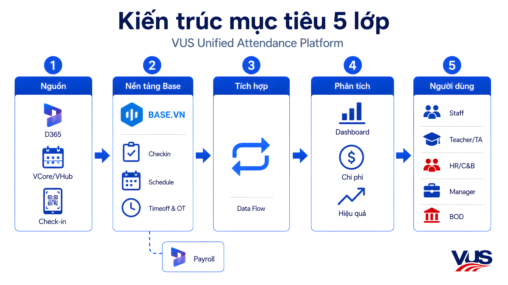
D365 là HRIS & payroll backbone (nhân sự, phòng ban, chức danh, cơ sở, lương). VCore/VHub quản lý lịch dạy, lớp học, giáo viên, TA. Attendance nguồn chấm công: mobile, vân tay/FaceID, QR/tablet, login lớp học, self-claim.
Bao gồm Base Checkin (ghi nhận log), Base Schedule (lịch làm việc/lịch dạy đối chiếu), Base Timeoff & Overtime (chuẩn hóa nghỉ phép, OT), Timesheet Engine (lớp xử lý final timesheet) và Exception Management.
Sáu luồng dữ liệu chính: D365 → Base (master data), VCore/VHub → Base (lịch dạy), LMS → Base (log login giáo viên), Nguồn chấm công → Base (logs), Base → D365 (final timesheet), Base/D365/VCore-VHub → Kho dữ liệu/PowerBI.
Bốn nhóm dashboard: Tổng quan Headcount (thông tin nhân sự), Vận hành nhân sự (chấm công, nghỉ phép), Chi phí nhân sự (tính công, tính lương), Hiệu quả nguồn lực (kết nối thêm doanh thu & chi phí).
UX phân theo vai trò: Employee/Staff, Teacher/TA, HR/C&B, Teacher Care, quản lý cơ sở/vùng, BLĐ. Mỗi vai trò có giao diện và quyền truy cập riêng theo nguyên tắc cần và đủ.
Kiến trúc này giữ vai trò các hệ thống hiện hữu (D365 vẫn payroll chính, VCore/VHub vẫn quản lý lịch dạy), đồng thời bổ sung Base làm nền tảng xử lý attendance trung tâm. Đây là điều kiện cần để VUS có final timesheet đáng tin, dữ liệu quản trị thống nhất và lộ trình mở rộng dài hạn.
Solution Blueprint đã rõ. Chương 03 đi sâu vào 4 năng lực nền tảng đảm nhận lớp lõi của kiến trúc.
Giải pháp Base cho VUS.
Sau khi xác định pain point ban đầu, nguyên tắc thiết kế và target architecture, chương này đi sâu vào các cấu phần giải pháp Base sẽ tham gia trực tiếp trong mô hình VUS Unified Attendance Platform. Bốn nhóm năng lực được trình bày theo đúng thứ tự luồng dữ liệu: Integration → Capture → Schedule → Analytics.
Khác với cách tiếp cận chỉ nhìn bài toán từ một công cụ chấm công riêng lẻ, Base đề xuất bắt đầu từ luồng dữ liệu tổng thể: dữ liệu nhân sự từ D365, dữ liệu ca/lịch dạy từ VCore/VHub, dữ liệu attendance từ nhiều nguồn, dữ liệu xử lý công trên Base và dữ liệu final timesheet đẩy ngược về D365. Cách trình bày này giúp VUS nhìn rõ Base không chỉ là một công cụ check-in/check-out, mà là lớp trung tâm kết nối dữ liệu, ghi nhận attendance, xử lý rule và tạo final timesheet phục vụ payroll.
Base Integration. Sáu đường ống dữ liệu.
Integration cần được làm rõ đầu tiên, vì toàn bộ bài toán attendance của VUS phụ thuộc vào việc dữ liệu giữa các hệ thống có được kết nối đúng hay không. Base đề xuất thiết kế integration theo nguyên tắc: mỗi nhóm dữ liệu có một nguồn dữ liệu gốc rõ ràng, dữ liệu đi theo từng đường ống riêng, có ID tham chiếu, trạng thái đồng bộ và log phục vụ đối soát. Đặc biệt, Base HRM đóng vai trò module trung gian giữ master data nhân sự đồng bộ từ D365.
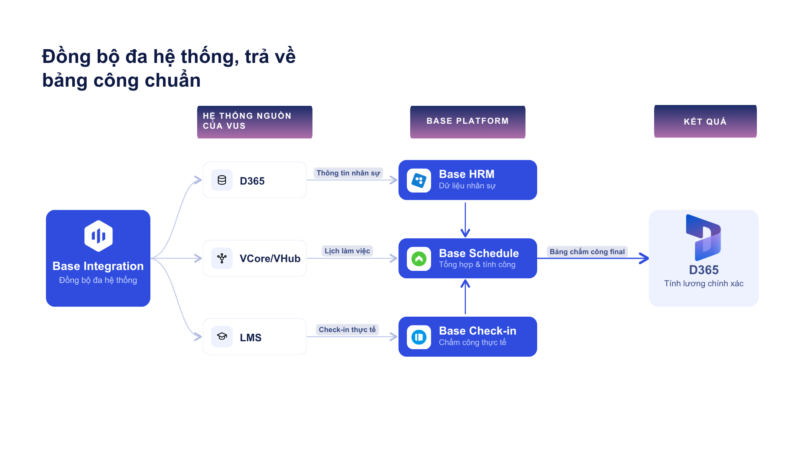
D365 là nguồn nhân sự gốc. Base HRM đóng vai trò module trung gian nhận và lưu master data nhân sự, làm tham chiếu cho mọi module Base khác (Base Checkin, Base Schedule, Base Timeoff/OT). Base không thay thế D365, chỉ giữ bản sao đồng bộ phục vụ tính công và phân quyền.
VCore/VHub là nguồn gốc lịch dạy. Base Schedule nhận ca create/update/delete realtime để có lịch chuẩn phục vụ đối chiếu attendance HRT.
Thay vì lắp FaceID tại từng lớp, Dev VUS đẩy API log thời gian giáo viên đăng nhập LMS khi bắt đầu buổi học. Base nhận log, đối chiếu với ca từ VCore/VHub, xác định attendance hợp lệ.
QR/tablet hiện hữu, mobile, vân tay/FaceID, self-claim, log bổ sung, import đặc biệt. Tất cả được chuẩn hóa về Base Checkin trước khi đối chiếu ca/lịch.
Sau khi Base xử lý attendance, ca, Timeoff, Overtime, exception và rule, tạo final timesheet đã khóa kỳ công. D365 không nên nhận log thô, chỉ nhận timesheet đã xử lý.
Dữ liệu từ nhiều hệ thống được đưa vào lớp báo cáo. Tùy định hướng kỹ thuật của VUS, dashboard có thể build trực tiếp trên Base, qua Data Warehouse, PowerBI hoặc kết hợp.
Nguyên tắc kiểm soát tích hợp
- Mỗi nhóm dữ liệu có một nguồn dữ liệu gốc rõ ràng
- Mọi đồng bộ có ID tham chiếu, trạng thái (pending/success/failed/retry) và audit log
- Lỗi tích hợp được ghi nhận, có cơ chế retry, DLQ và escalation
- Final timesheet phải khóa kỳ công trước khi đẩy về D365
- Thay đổi lịch HRT từ VCore/VHub được cập nhật realtime
- Dữ liệu dashboard phân quyền theo vai trò người xem
Có 6 đường ống dữ liệu rồi, câu hỏi tiếp theo là VUS ghi nhận attendance trong thực tế như thế nào ở quy mô nhiều cơ sở, nhiều nhóm nhân sự. Đó là vai trò của Base Checkin.
Base Checkin. Sáu hình thức ghi nhận attendance.
VUS bắt đầu từ bài toán QR Code check-in. Khi mở rộng quy mô, một phương thức duy nhất đều có rủi ro: thiết bị lỗi, mạng không ổn, người dùng thao tác sai, dữ liệu thiếu chi tiết cho HRT.
Định hướng phù hợp là đa dạng hóa hình thức chấm công. Base Checkin hỗ trợ 6 hình thức ghi nhận attendance. Mỗi hình thức phục vụ một kịch bản, nhưng tất cả log cuối cùng được đưa về Base Checkin để chuẩn hóa và xử lý thống nhất.
QR Code / Tablet (kế thừa)
Phù hợp điểm cố định tại cơ sở. Tận dụng thiết bị VUS đang dùng. Trong mô hình Base, QR là một nguồn log, không còn là phương thức duy nhất.
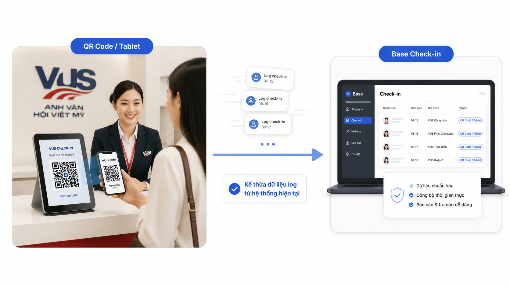
Trong mô hình hiện tại, QR Code/tablet đang là phương thức chính của VUS. Base giữ lại như một nguồn ghi nhận hợp lệ, nhưng không phụ thuộc vào QR. Log từ QR/tablet được Base nhận, chuẩn hóa và đối chiếu với lịch như mọi nguồn khác.
Mobile + GPS
Linh hoạt cho nhân sự nhiều địa điểm, quản lý vùng, công tác. Cũng làm backup khi thiết bị cố định gặp sự cố. GPS xác minh vị trí, ảnh selfie tùy chọn.
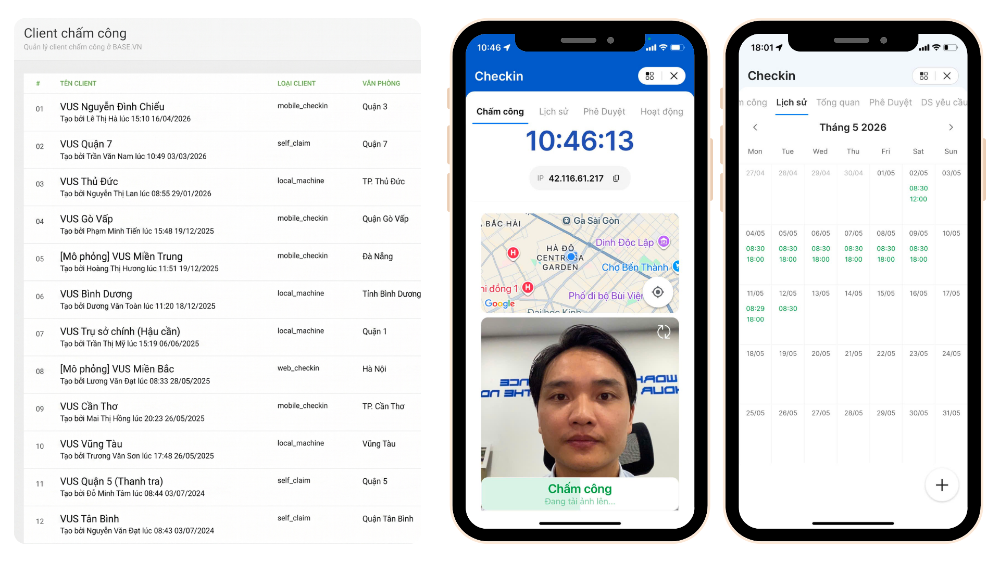
Mobile check-in giải bài toán nhân sự không ở điểm cố định: quản lý vùng đi giữa nhiều chi nhánh, nhân sự công tác, hoặc khi thiết bị QR/máy chấm công tại cơ sở gặp sự cố. GPS xác minh vị trí giúp giảm rủi ro gian lận chấm công hộ.
Máy chấm công (FaceID / vân tay)
Phù hợp điểm cố định: văn phòng, cơ sở, trung tâm. Không khuyến nghị lắp tại từng lớp học vì chi phí cao và đã có lời giải LMS tốt hơn cho HRT.
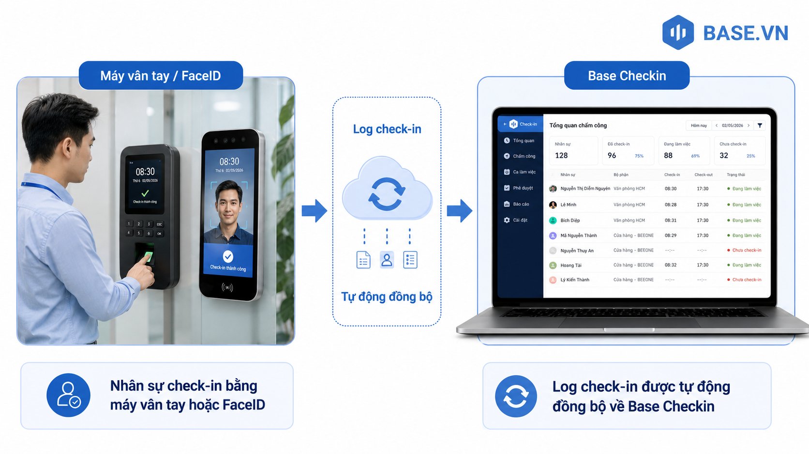
Base tích hợp với các dòng máy chấm công phổ biến qua API. Phù hợp tại văn phòng HQ và các điểm cố định cần độ chính xác sinh trắc cao. Với HRT tại lớp học, Base khuyến nghị dùng phương án LMS check-in ở phần kế tiếp thay vì lắp FaceID cho từng lớp.
LMS check-in tại lớp học
Tận dụng hành vi tự nhiên: giáo viên đăng nhập LMS khi bắt đầu buổi học. Dev VUS đẩy API log sang Base. Không cần lắp FaceID từng lớp.
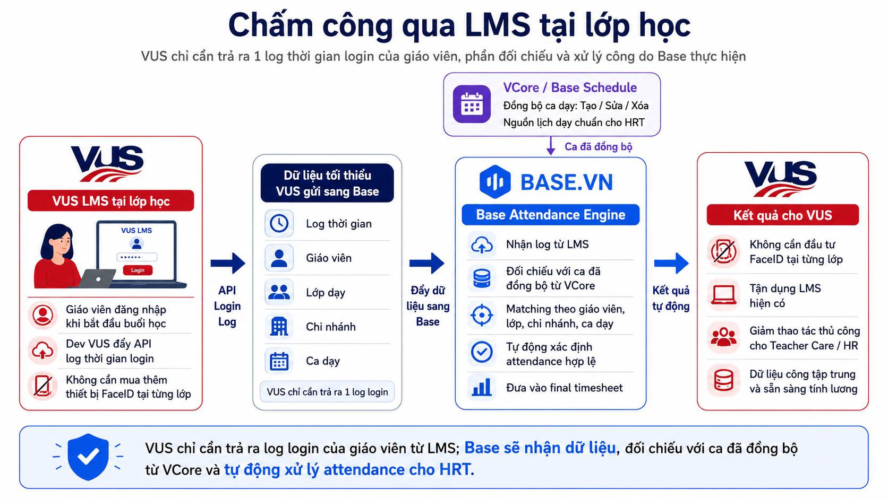
Đây là điểm khác biệt lớn nhất của giải pháp Base cho VUS. Lắp FaceID/vân tay tại từng lớp học (với 70+ trung tâm, mỗi trung tâm nhiều phòng học) là một khoản đầu tư rất lớn về cả phần cứng và vận hành. Trong khi đó, mọi giáo viên đều bắt buộc login LMS để bắt đầu giảng dạy. Hành vi này tự nhiên, không cần đào tạo, không cần thiết bị mới.
VUS chỉ cần expose một API duy nhất đẩy log login giáo viên. Toàn bộ phần đối chiếu lịch dạy, xác định ca hợp lệ, xử lý exception nằm ở Base.
Self-claim & bổ sung công có kiểm soát
Backup khi thiết bị lỗi, nhân sự quên thao tác, hoặc lịch đổi sát giờ. Có người gửi, lý do, bằng chứng, người duyệt, audit log đầy đủ.
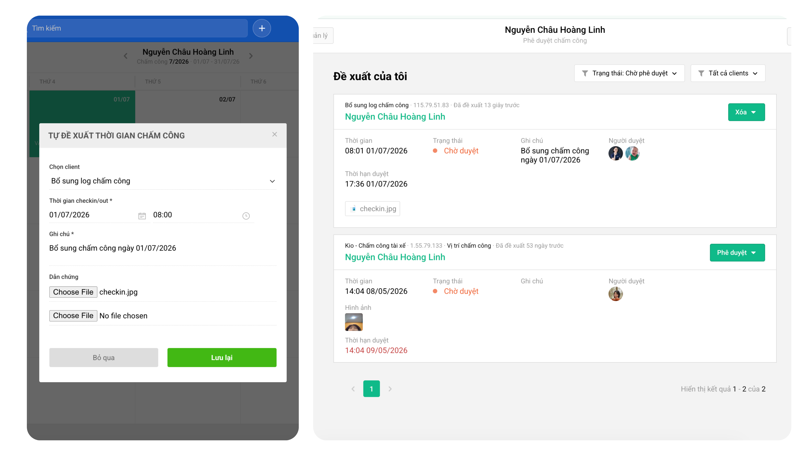
Không có nền tảng nào ghi nhận 100% attendance đúng thời điểm. Self-claim là cơ chế xử lý exception có kiểm soát: nhân sự tự khai báo, quản lý duyệt, hệ thống ghi audit log. Tránh được tình trạng dồn xử lý thủ công vào cuối kỳ payroll.
Import Excel / đồng bộ trễ
Cho thiết bị lưu log cục bộ, sự cố diện rộng, hoặc nguồn cũ chưa có API realtime. Vẫn giữ nguồn, thời gian, người liên quan, trạng thái.
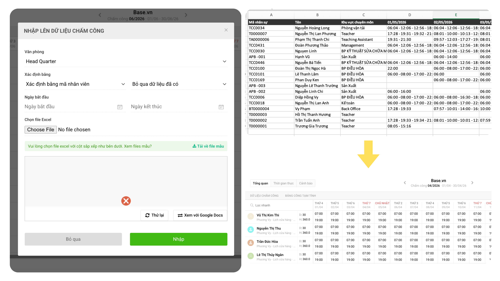
Trong giai đoạn đầu triển khai, không phải nguồn nào cũng có API realtime. Import Excel/CSV là cơ chế đệm: VUS có thể đẩy log từ hệ thống cũ vào Base hằng ngày/tuần. Khi API sẵn sàng, chuyển sang đồng bộ realtime mà không thay đổi cấu trúc dữ liệu ở Base.
Khi giáo viên login LMS lúc bắt đầu buổi học, Base nhận log → kiểm tra giáo viên có trong master data D365 không → kiểm tra ca dạy đã đồng bộ từ VCore/VHub chưa → matching log với giáo viên, lớp, chi nhánh, ca → xác định attendance hợp lệ → đưa vào final timesheet. Toàn bộ logic xử lý nằm ở Base. VUS chỉ cần expose 1 API.
Có log attendance rồi, cần lịch chuẩn để đối chiếu. Base Checkin trả lời "ai đã chấm khi nào", Base Schedule trả lời "người đó được kỳ vọng làm việc ca nào, ở đâu, theo rule nào".
Base Schedule. Sáu nhóm năng lực.
Base Schedule là lớp lịch chuẩn và trung tâm xử lý final timesheet. Nếu Base Checkin trả lời "ai đã ghi nhận attendance vào thời điểm nào", Base Schedule trả lời "người đó được kỳ vọng làm việc hoặc giảng dạy vào ca nào, theo rule nào, và công cuối kỳ là bao nhiêu". Đây là module phức tạp nhất, gồm 6 nhóm năng lực: từ thiết lập lịch làm việc cấp tổ chức đến tự động chạy công cho hàng nghìn nhân sự.
Nhân viên văn phòng & cơ sở. Lịch + ca + chấm công + nghỉ phép + OT đều thiết lập trên Base Schedule.
Giáo viên & TA. Lịch dạy đẩy realtime từ VCore/VHub. Base Schedule không thay thế, chỉ dùng để đối chiếu attendance.
Sáu nhóm năng lực của Base Schedule
Lịch làm việc
Base cho phép thiết lập nhiều lịch làm việc theo từng chi nhánh với phân quyền quản lý theo user, và cho phép VUS tự thiết lập công thức tính công đặc thù của toàn hệ thống nói chung và từng chi nhánh nói riêng.
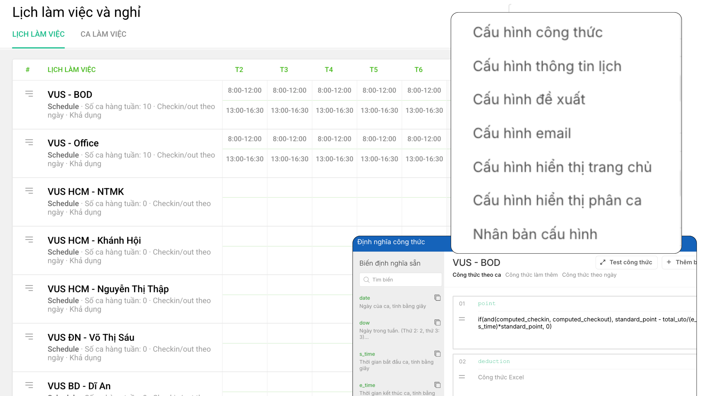
Với 70+ trung tâm, VUS không thể dùng 1 lịch làm việc chung cho cả tổ chức. Base Schedule cho phép:
- Nhiều lịch làm việc song song: mỗi chi nhánh 1 lịch, VP có lịch riêng, BOD có lịch riêng, mỗi lịch quản lý được ngày lễ và ngày nghỉ đặc thù
- Phân quyền quản lý theo user: mỗi lịch được giao cho người quản lý cụ thể (quản lý chi nhánh, HR vùng, HR headquarter), họ chỉ xem và điều chỉnh trong phạm vi được phân quyền
- VUS tự thiết lập công thức tính công đặc thù: có công thức chung áp cho toàn hệ thống, đồng thời cho phép mỗi chi nhánh tùy biến rule riêng (giờ chuẩn, cách tính đi muộn/về sớm, cách xử lý ca đêm) khi cần
Ca làm việc
Cài đặt đa dạng ca mẫu: hành chính, cố định, xoay, linh hoạt, ca đêm. Sắp ca mẫu cho người dùng theo từng lịch làm việc. Hỗ trợ cả phòng ban, cơ sở và cá nhân.
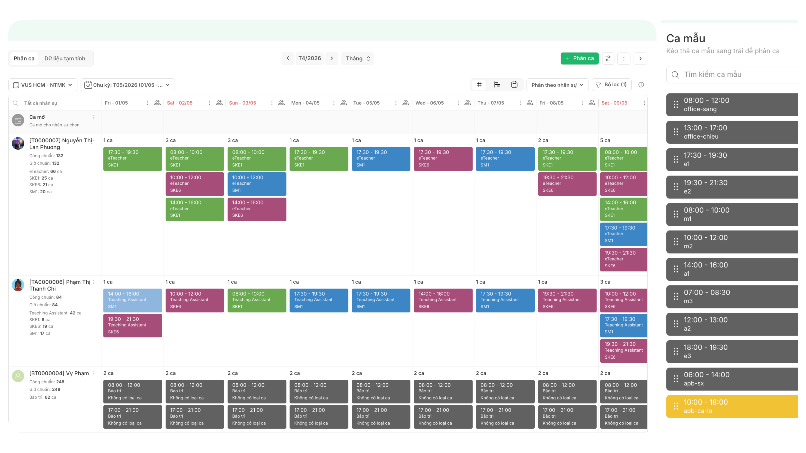
HRA của VUS không đồng nhất: nhân sự văn phòng dùng ca hành chính, nhân sự cơ sở có thể dùng ca xoay/sáng/chiều, một số vị trí có ca đêm hoặc linh hoạt. Base hỗ trợ tất cả mô hình ca này trên cùng nền tảng, sắp ca cho từng nhóm theo cách phù hợp.
Đi làm việc
Nhận ca, chấm công và theo dõi công cá nhân. Hỗ trợ đổi ca, chuyển ca, trả ca có phê duyệt. Final timesheet đối chiếu với lịch đã cập nhật, không phải lịch gốc.
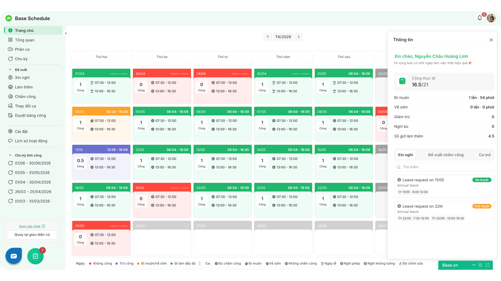
Vận hành thực tế tại 70+ trung tâm, lịch ca thay đổi rất thường xuyên: nhân sự xin đổi ca với đồng nghiệp, chuyển ca khi bận đột xuất, trả ca khi nghỉ. Mọi thay đổi đều có audit log và phải qua phê duyệt để giữ tính kiểm soát.
Tăng ca
Input: NV hoặc quản lý đề xuất. Xử lý: tự động tính giờ tăng ca và ràng buộc theo luật lao động. Output: số giờ OT tính tự động theo từng người, theo chính sách công ty.
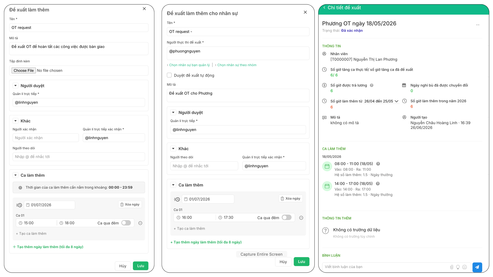
OT là chi phí quan trọng cần kiểm soát. Base giúp VUS quản lý OT từ khâu đề xuất, duyệt, đến tự động tính giờ theo policy. Đảm bảo không vi phạm luật lao động, đồng thời cho phép HRD/BOD nhìn thấy chi phí OT theo thời gian thực.
Nghỉ phép
Chuẩn hóa form nghỉ phép, quy trình, quy định phê duyệt. Quản lý ngày phép tự động cho từng nhân sự. Tích hợp ngay vào quá trình chạy công, không cần đối soát thủ công cuối kỳ.
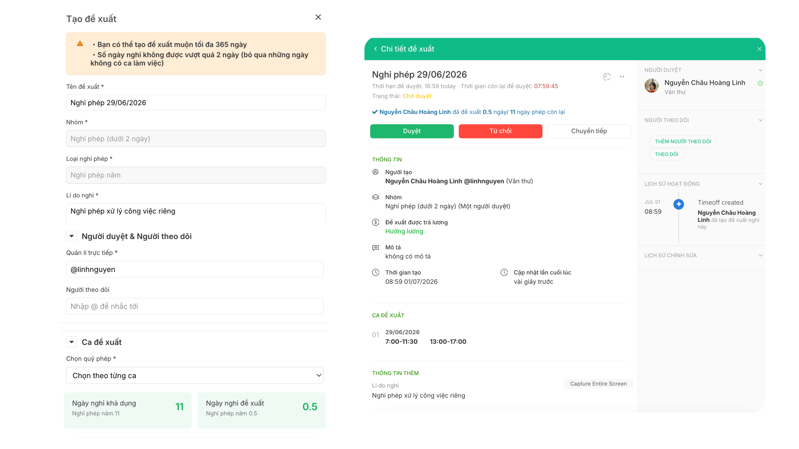
Nghỉ phép phải vào quá trình chạy công sớm, không phải đối soát thủ công cuối kỳ. Khi nhân sự được duyệt nghỉ, ngày đó tự động được đánh dấu trong final timesheet, không bị tính vắng. Quy trình duyệt phân theo loại nghỉ và phòng ban.
Tính toán công tự động
Hệ thống tính toán tự động toàn bộ công cho nhân sự của tất cả chi nhánh, văn phòng. Áp rule khác nhau theo HRA/HRT, theo nhóm. Ra final timesheet payroll-ready đẩy về D365.
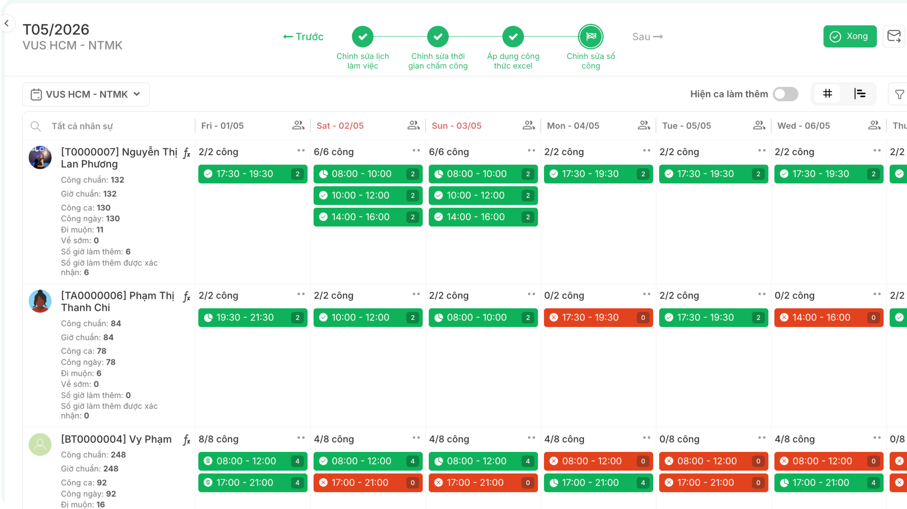
Đây là năng lực cốt lõi tạo ra giá trị lớn nhất của Base Schedule với VUS. Toàn bộ logic tính công, đối chiếu attendance với ca, áp Timeoff/OT, xử lý exception, tạo final timesheet được Base xử lý tự động. HR/C&B không phải tính tay từng chi nhánh.
Logic chạy công
Có final timesheet sạch rồi, dữ liệu này cần được dùng để trả lời các câu hỏi quản trị. Đó là vai trò của lớp Workforce Analytics.
Workforce Analytics. Bốn nhóm dashboard cho VUS.
Sau khi dữ liệu chấm công, lịch làm việc, nghỉ phép, tăng ca, tính công và tính lương được hợp nhất về một luồng xử lý thống nhất trên Base, VUS có thể phát triển lớp dashboard quản trị để khai thác dữ liệu nguồn lực ở cấp sâu hơn. Mục tiêu không chỉ là trả lời "nhân sự đã chấm công hay chưa", mà giúp VUS nhìn rõ hơn các câu hỏi quản trị quan trọng: quy mô và cơ cấu nhân sự đang thay đổi thế nào, tình trạng đi trễ/vắng mặt/nghỉ phép có tạo rủi ro vận hành không, chi phí nhân sự và quỹ lương đang phân bổ ra sao, và chi phí đó có tương xứng với doanh thu, hiệu quả kinh doanh hay không.
Với bộ dữ liệu gồm Nhân sự · Chấm công · Nghỉ phép · Tính công · Tính lương · Doanh thu/Chi phí, Base đề xuất VUS xây dựng hệ thống dashboard theo 4 nhóm chính, đi từ dữ liệu vận hành nền tảng đến phân tích hiệu quả nguồn lực.
Dashboard Tổng quan Headcount
Khai thác dữ liệu từ thông tin nhân sự (Base HRM). Giúp VUS nhìn được quy mô, cơ cấu và biến động nguồn lực trên toàn hệ thống.
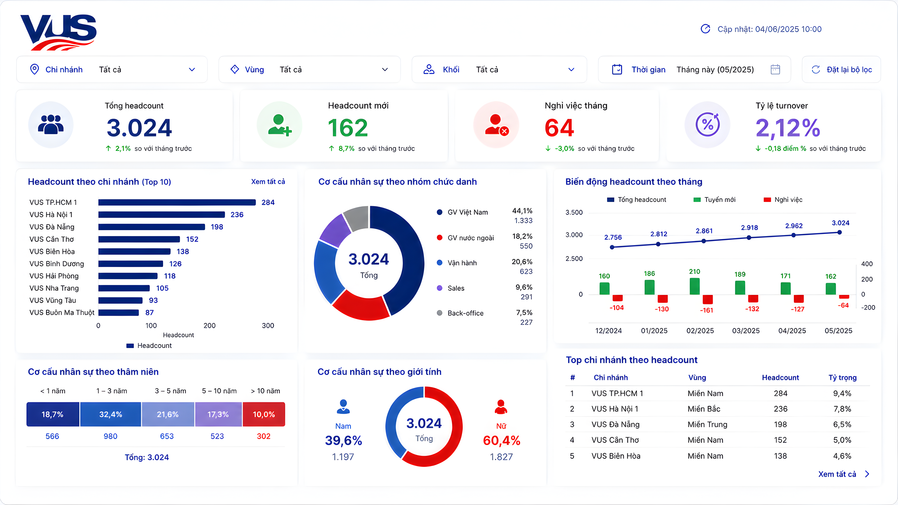
Các góc nhìn chính: headcount theo chi nhánh/vùng/khối/nhóm chức danh, cơ cấu theo thâm niên/độ tuổi/giới tính/loại hợp đồng, biến động headcount theo tháng (vào mới, nghỉ việc, điều chuyển), tỷ lệ turnover theo chi nhánh hoặc nhóm nhân sự nếu có dữ liệu onboard/offboard.
Dashboard này giúp VUS theo dõi sức khỏe nguồn lực ở cấp nền tảng: chi nhánh nào đang thiếu người, nhóm nhân sự nào biến động cao, khu vực nào có rủi ro về ổn định đội ngũ. Đây là lớp dữ liệu nền để kết nối tiếp với chấm công, tính công và chi phí nhân sự.
Dashboard Vận hành nhân sự
Kết hợp dữ liệu từ chấm công và nghỉ phép. Phản ánh chất lượng vận hành nhân sự hằng ngày tại từng trung tâm.
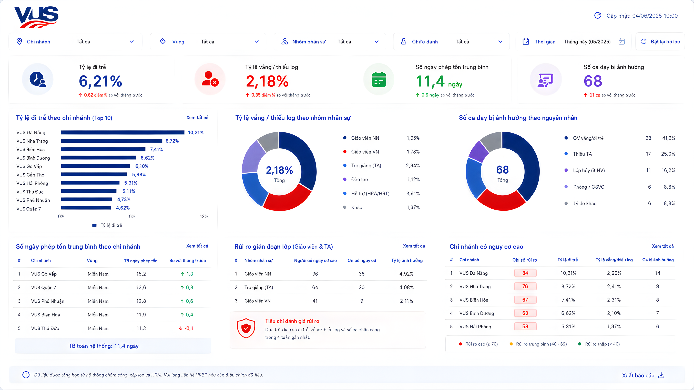
Các góc nhìn chính: tỷ lệ đi trễ theo chi nhánh/vị trí/nhóm HRA-HRT, tỷ lệ vắng mặt và thiếu log hợp lệ, tình trạng nghỉ phép theo tháng/chi nhánh/nhóm nhân sự, tỷ lệ sử dụng phép năm và số ngày phép tồn, danh sách nhân sự có rủi ro dồn phép cuối năm, các điểm bất thường về attendance theo chi nhánh hoặc chức danh.
Riêng nhóm giáo viên/TA, dashboard mở rộng thêm: tỷ lệ đi trễ/vắng theo ca dạy, số ca dạy bị ảnh hưởng do thiếu log hoặc vắng mặt, rủi ro gián đoạn lớp học, chi nhánh hoặc khung giờ có tỷ lệ rủi ro lớp học cao.
Dashboard này giúp VUS chuyển từ xử lý chấm công cuối kỳ sang theo dõi vận hành theo thời gian gần thực. Với mô hình giáo dục, giáo viên đi trễ hoặc vắng mặt không chỉ là vấn đề nhân sự mà còn ảnh hưởng trực tiếp đến trải nghiệm học viên và chất lượng vận hành lớp học.
Dashboard Chi phí nhân sự
Khai thác dữ liệu từ tính công và tính lương. Giúp VUS kiểm soát chi phí nhân sự theo tháng, trung tâm và nhóm chức danh.
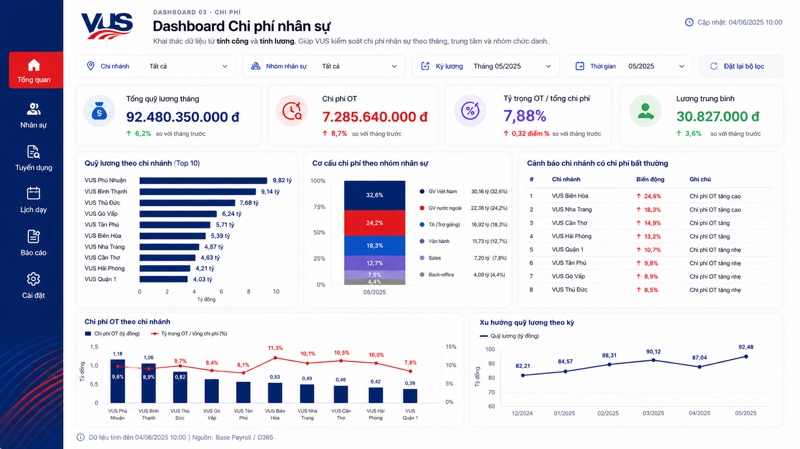
Các góc nhìn chính: tổng quỹ lương theo tháng, quỹ lương theo chi nhánh/vùng/khối/vị trí, chi phí theo nhóm (HRA, HRT, GV Việt Nam, GV nước ngoài, vận hành, sales), chi phí tăng ca theo chi nhánh và nhóm nhân sự, tỷ trọng chi phí OT trên tổng chi phí nhân sự, lương trung bình theo vị trí/chức danh, so sánh chi phí giữa các nhóm nhân sự, cảnh báo chi nhánh có chi phí hoặc OT tăng bất thường.
Dashboard này giúp VUS nhìn rõ chi phí nhân sự không chỉ ở cấp tổng quỹ lương, mà theo từng lát cắt vận hành. Với ngành giáo dục, chi phí giáo viên, chi phí dạy ngoài giờ và chi phí tăng ca là những yếu tố cần theo dõi sát vì ảnh hưởng trực tiếp đến hiệu quả tài chính của từng trung tâm.
Dashboard Hiệu quả nguồn lực theo doanh thu và chi phí
Kết nối thêm dữ liệu doanh thu và chi phí theo trung tâm, lớp học, chương trình. Lớp dashboard có giá trị quản trị cao nhất, dành cho BOD/HRD.
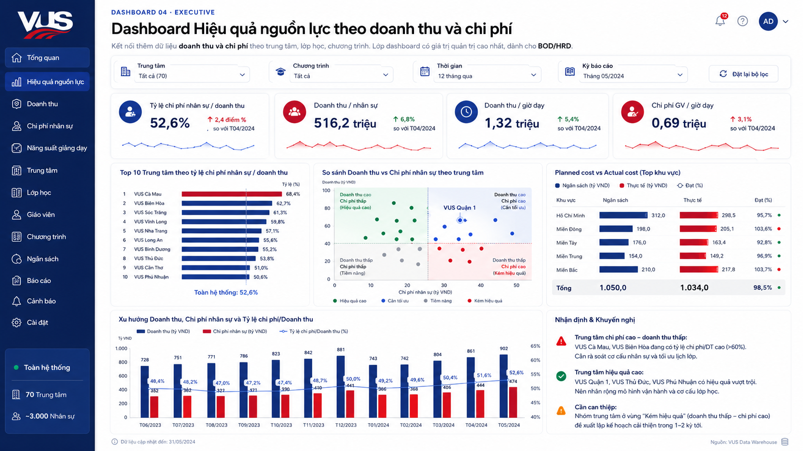
Các góc nhìn chính: tỷ lệ chi phí nhân sự/doanh thu theo trung tâm, doanh thu trên mỗi nhân sự, doanh thu trên mỗi giờ công hoặc giờ dạy, chi phí nhân sự trên mỗi học viên, chi phí giáo viên trên mỗi lớp hoặc giờ dạy, so sánh các trung tâm cùng quy mô nhưng hiệu quả chi phí khác nhau, Planned cost vs Actual cost nếu VUS có dữ liệu ngân sách nhân sự.
Dashboard này giúp VUS kết nối dữ liệu HR với hiệu quả kinh doanh. Thay vì chỉ biết trung tâm nào có bao nhiêu nhân sự hoặc phát sinh bao nhiêu chi phí lương, Ban lãnh đạo nhìn thấy chi phí nguồn lực đó có tạo ra hiệu quả tương xứng với doanh thu, lớp học và số lượng học viên hay không, từ đó xác định trung tâm nào vận hành tốt để nhân rộng, trung tâm nào cần can thiệp.
Tổng kết đề xuất dashboard
Base đề xuất VUS không xây dựng một bộ báo cáo chấm công rời rạc, mà phát triển lớp Workforce Analytics & Dashboard theo 4 nhóm giá trị, đi từ dữ liệu vận hành nền tảng đến phân tích hiệu quả nguồn lực:
| Nhóm dashboard | Nguồn dữ liệu chính | Câu hỏi quản trị cần trả lời |
|---|---|---|
| Tổng quan Headcount | Thông tin nhân sự | Quy mô, cơ cấu và biến động nguồn lực đang như thế nào? |
| Vận hành nhân sự | Chấm công, nghỉ phép | Attendance, nghỉ phép, đi trễ, vắng mặt có tạo rủi ro vận hành không? |
| Chi phí nhân sự | Tính công, tính lương | Quỹ lương, OT và chi phí nhân sự đang phân bổ ra sao? |
| Hiệu quả nguồn lực | Doanh thu, chi phí, dữ liệu HR | Chi phí nhân sự có tương xứng với hiệu quả kinh doanh không? |
Bốn nhóm dashboard trên có thể triển khai theo độ trưởng thành dữ liệu: bắt đầu từ Dashboard 01 và 02 (dữ liệu Base xử lý trực tiếp), tiếp đến Dashboard 03 khi tính lương đã đồng bộ ổn định, sau khi vận hành ổn định mở rộng sang Dashboard 04 với data tài chính & kinh doanh để có lớp executive insight đầy đủ.
Giải pháp đã rõ. Câu hỏi tiếp theo: triển khai theo lộ trình nào để vừa giữ tầm nhìn tổng thể, vừa kiểm soát rủi ro ở quy mô 3.000+ nhân sự, 70+ trung tâm.
Implementation Roadmap.
Với quy mô và độ phức tạp của VUS, Base không khuyến nghị rollout toàn bộ ngay từ đầu. Lộ trình 5 giai đoạn dưới đây, tổng thời gian dự kiến 6-9 tháng từ lúc thống nhất giải pháp đến khi vận hành ổn định toàn hệ thống, giúp giữ tầm nhìn tổng thể, đồng thời kiểm soát rủi ro ở từng bước.
Hai bên Base và VUS trao đổi trực tiếp trong nhiều buổi với sự tham gia của HR, C&B, Teacher Care, IT và BOD. Cùng làm rõ rule HRA/HRT, dữ liệu D365, dữ liệu VCore/VHub, luồng attendance, định nghĩa final timesheet và tiêu chí pilot. Kết quả là tài liệu thiết kế giải pháp được cả hai bên thống nhất.
Cấu hình Base theo tài liệu thiết kế đã thống nhất. Thiết lập ca, rule, phân quyền. Build API tích hợp với D365 và VCore/VHub. Setup nguồn chấm công. Chuẩn bị dữ liệu cho 1-2 cơ sở pilot. Kiểm thử end-to-end với sự tham gia của VUS.
Áp dụng tại 1-2 cơ sở tiên phong (1 cơ sở mô hình điển hình, 1 cơ sở quy mô lớn hoặc đặc thù). Kiểm chứng rule, quy trình, dữ liệu, final timesheet bằng thực tế vận hành. Đối soát với D365. Thu thập feedback từ HR, giáo viên, quản lý.
Sau khi pilot ổn định, mở rộng theo từng đợt cụm trung tâm. Mỗi đợt 15-20 trung tâm, cách nhau 2 tuần để Base team và VUS team kịp hỗ trợ. Có kế hoạch quản trị thay đổi (change management) rõ ràng cho từng đợt: truyền thông nội bộ, đào tạo người dùng, hỗ trợ tại chỗ giai đoạn đầu.
Ổn định vận hành toàn hệ thống. Triển khai đầy đủ PowerBI dashboard cho BOD/HRD. Tối ưu rule dựa trên dữ liệu thực tế. Mở rộng phân tích workforce cost & productivity. Việc chuyển sang On-Premise (nếu VUS chọn) sẽ được đánh giá lại sau khi hệ thống vận hành ổn định, không nằm trong phạm vi 5 giai đoạn triển khai này.
Nguyên tắc chọn cơ sở pilot
Có đủ HRA và HRT, có giáo viên, TA, quản lý, để test toàn bộ rule.
Quản lý cơ sở sẵn sàng feedback, hợp tác xử lý exception, không kháng cự thay đổi.
Có nhiều ca, nhiều lớp, để test các tình huống đa cơ sở, multi-shift, multi-class.
Tiêu chí thành công của pilot
- Final timesheet khớp với dữ liệu thực tế (sai số < 0.5%) trong 2 kỳ payroll liên tiếp
- Tỷ lệ exception xử lý trong tuần đạt > 95% (không tồn đọng đến cuối kỳ)
- Mức adoption mobile check-in/login lớp học đạt > 90% nhân sự pilot
- Thời gian xử lý cuối kỳ payroll giảm ít nhất 50% so với baseline
- Feedback NPS ≥ 7/10 từ HR, Teacher Care và quản lý cơ sở pilot
Permission, On-Premise & Security.
Hệ thống xử lý dữ liệu nhạy cảm về nhân sự, attendance, timesheet và payroll-ready data. Cần phân quyền chặt chẽ theo vai trò, cơ sở, vùng, phạm vi dữ liệu, và có định hướng nền tảng dài hạn.
5.1. Phân quyền HRM theo vai trò & phạm vi
Base HRM hỗ trợ phân quyền theo nhóm chức năng, mẫu quyền, nhóm người dùng. Với VUS, ma trận quyền được thiết kế riêng cho từng vai trò.
| Vai trò | Xem data | Sửa rule | Duyệt OT/Timeoff | Đẩy về D365 | PowerBI |
|---|---|---|---|---|---|
| Employee / Staff | Của mình | · | · | · | · |
| Teacher / TA | Của mình | · | · | · | · |
| Quản lý cơ sở | Cơ sở mình | · | ✓ Trong cơ sở | · | Cơ sở mình |
| Quản lý vùng | Vùng mình | · | ✓ Trong vùng | · | Vùng mình |
| Teacher Care | HRT theo phạm vi | · | ✓ HRT | · | HRT operations |
| HR / C&B | Toàn hệ thống | ✓ Theo phạm vi | ✓ Toàn bộ | ✓ | HR view |
| BOD / HRD | Toàn hệ thống | · | ✓ Toàn hệ thống | · | ✓ Executive |
| IT / Admin | Cấu hình hệ thống | ✓ Cấu hình | ✓ Trong phòng ban | ✓ | Sync status |
5.2. Định hướng On-Premise
Trong 12-18 tháng đầu, triển khai SaaS để pilot nhanh, kiểm chứng rule, rollout theo wave. Hạ tầng do Base vận hành. VUS tập trung vào nghiệp vụ và adoption.
Sau 12-24 tháng vận hành ổn định, VUS có thể cân nhắc On-Premise theo cách tiếp cận Golden Image để tăng tự chủ hạ tầng, dữ liệu và tối ưu chi phí dài hạn.
5.3. Bảo mật nền tảng & dữ liệu
- SSO tích hợp với hệ thống VUS
- 2FA cho nhóm có quyền nhạy cảm
- IP whitelist cho IT/Admin
- Session timeout cấu hình theo vai trò
- Mã hóa dữ liệu at-rest và in-transit
- Backup hằng ngày, restore tested
- DR plan có RTO/RPO rõ ràng
- Cách ly dữ liệu theo tenant VUS riêng
- Audit log các thay đổi dữ liệu công quan trọng
- Truy vết duyệt OT/Timeoff/exception
- Log đồng bộ giữa Base ↔ D365 ↔ VCore
- Export log theo yêu cầu kiểm toán
5.4. Tiêu chuẩn & kiểm thử
- Tuân thủ Nghị định 13/2023/NĐ-CP về bảo vệ dữ liệu cá nhân tại Việt Nam
- Pen-test định kỳ 6 tháng/lần bởi đơn vị độc lập
- Báo cáo bảo mật minh bạch cho IT VUS hằng quý
- Quy trình phản ứng sự cố (incident response) có SLA cụ thể
Giá trị kỳ vọng cho VUS.
Khi VUS Unified Attendance Platform vận hành ổn định trên toàn hệ thống, đây là những con số mà Base kỳ vọng cùng VUS đạt được.
Bước tiếp theo
Base đề xuất một buổi thảo luận chi tiết với HR, C&B, Teacher Care, IT và đại diện BOD để cùng làm rõ giải pháp, thống nhất rule HRA/HRT, các luồng dữ liệu, tiêu chí pilot và kế hoạch triển khai cụ thể cho VUS.